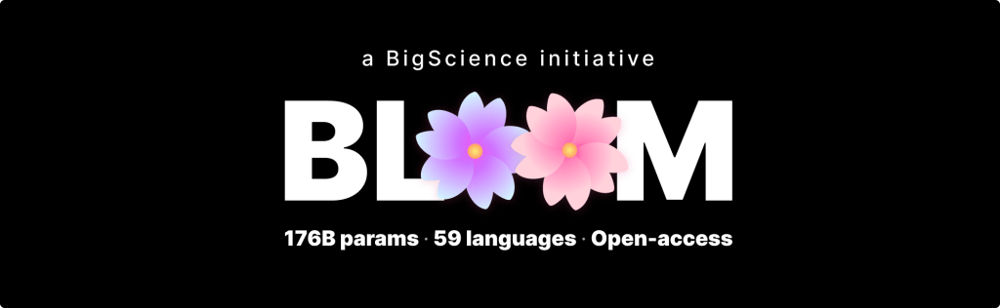
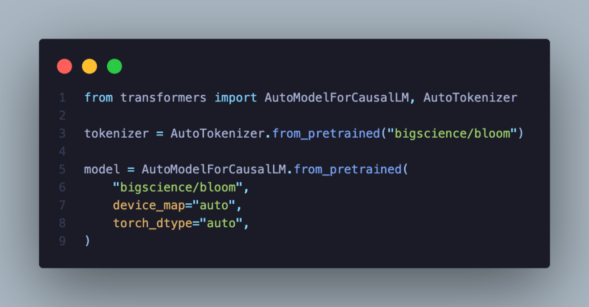

What is BLOOM?#
BigScience Large Open-science Open-access Multilingual Language Model

What is BLOOM?#
BLOOM is a 175-billion parameter model for language processing, able to generate text much like GPT-3 and OPT-175B.
It was developed to be multilingual, being deliberately trained on datasets containing 46 natural languages and 13 programming languages.
Unlike GPT-3, BLOOM is open-access, meaning anyone is able to download and use BLOOM for themselves.
Everything about BLOOM is openly available on the various pages within BigScience’s Hugging Face page, from the training logs to models of various sizes to checkpoints.
Model Details#
BLOOM is an autoregressive Large Language Model (LLM), trained to continue text from a prompt on vast amounts of text data using industrial-scale computational resources.
As such, it is able to output coherent text in 46 languages and 13 programming languages that is hardly distinguishable from text written by humans.
BLOOM can also be instructed to perform text tasks it hasn’t been explicitly trained for, by casting them as text generation tasks.
Basics#
Developed by: BigScience (website)
All collaborators are either volunteers or have an agreement with their employer. (Further breakdown of participants forthcoming.)
Model Type: Transformer-based Language Model
Checkpoints format:
transformers(Megatron-DeepSpeed format available here)Version: 1.0.0
Languages: Multiple; see training data
License: RAIL License v1.0 (link / article and FAQ)
Release Date Estimate: Monday, 11.July.2022
Send Questions to: bigscience-contact@googlegroups.com
Cite as: BigScience, BigScience Language Open-science Open-access Multilingual (BLOOM) Language Model. International, May 2021-May 2022
Funded by:
The French government.
Hugging Face (website).
Technical Specifications#
Model Architecture and Objective#
Modified from Megatron-LM GPT2 (see paper, BLOOM Megatron code):
Decoder-only architecture
Layer normalization applied to word embeddings layer (
StableEmbedding; see code, paper)ALiBI positional encodings (see paper), with GeLU activation functions
176 billion parameters:
70 layers, 112 attention heads
Hidden layers are 14336-dimensional
Sequence length of 2048 tokens used (see BLOOM tokenizer, tokenizer description)
Objective Function: Cross Entropy with mean reduction (see API documentation).
Compute infrastructure#
Jean Zay Public Supercomputer, provided by the French government (see announcement).
Hardware#
384 A100 80GB GPUs (48 nodes)
Additional 32 A100 80GB GPUs (4 nodes) in reserve
8 GPUs per node Using NVLink 4 inter-gpu connects, 4 OmniPath links
CPU: AMD
CPU memory: 512GB per node
GPU memory: 640GB per node
Inter-node connect: Omni-Path Architecture (OPA)
NCCL-communications network: a fully dedicated subnet
Disc IO network: shared network with other types of nodes
Software#
Megatron-DeepSpeed (Github link)
DeepSpeed (Github link)
PyTorch (pytorch-1.11 w/ CUDA-11.5; see Github link)
apex (Github link)
Training#
Training Data#
Training data includes:
46 natural languages
13 programming languages
In 1.6TB of pre-processed text, converted into 350B unique tokens (see the tokenizer section for more.)
Languages#
The pie chart shows the distribution of languages in training data.

Distribution of programming languages.
Extension |
Language |
Number of files |
|---|---|---|
java |
Java |
5,407,724 |
php |
PHP |
4,942,186 |
cpp |
C++ |
2,503,930 |
py |
Python |
2,435,072 |
js |
JavaScript |
1,905,518 |
cs |
C# |
1,577,347 |
rb |
Ruby |
6,78,413 |
cc |
C++ |
443,054 |
hpp |
C++ |
391,048 |
lua |
Lua |
352,317 |
go |
GO |
227,763 |
ts |
TypeScript |
195,254 |
C |
C |
134,537 |
scala |
Scala |
92,052 |
hh |
C++ |
67,161 |
H |
C++ |
55,899 |
tsx |
TypeScript |
33,107 |
rs |
Rust |
29,693 |
phpt |
PHP |
9,702 |
c++ |
C++ |
1,342 |
h++ |
C++ |
791 |
php3 |
PHP |
540 |
phps |
PHP |
270 |
php5 |
PHP |
166 |
php4 |
PHP |
29 |
Preprocessing#
Tokenization: The BLOOM tokenizer (link), a learned subword tokenizer trained using:
A byte-level Byte Pair Encoding (BPE) algorithm
A simple pre-tokenization rule, no normalization
A vocabulary size of 250,680
It was trained on a subset of a preliminary version of the corpus using alpha-weighting per language.
Speeds, Sizes, Times#
Training logs: Tensorboard link
Dates:
Started 11th March, 2022 11:42am PST
Estimated end: 5th July, 2022
Checkpoint size:
Bf16 weights: 329GB
Full checkpoint with optimizer states: 2.3TB
Training throughput: About 150 TFLOP per GPU per second
Number of epochs: 1
Estimated cost of training: Equivalent of $2-5M in cloud computing (including preliminary experiments)
Server training location: Île-de-France, France
Environmental Impact#
The training supercomputer, Jean Zay (website), uses mostly nuclear energy.
The heat generated by it is reused for heating campus housing.
Uses#
How to use#
This model can be easily used and deployed using HuggingFace’s ecosystem. This needs transformers and accelerate installed. The model can be downloaded as follows:

Intended Use#
This model is being created in order to enable public research on large language models (LLMs). LLMs are intended to be used for language generation or as a pretrained base model that can be further fine-tuned for specific tasks. Use cases below are not exhaustive.
Direct Use#
Text generation
Exploring characteristics of language generated by a language model
Examples: Cloze tests, counterfactuals, generations with reframings
Downstream Use#
Tasks that leverage language models include: Information Extraction, Question Answering, Summarization
Misuse and Out-of-scope Use#
See the BLOOM License, Attachment A, for detailed usage restrictions. The below list is non-exhaustive, but lists some easily foreseeable problematic use cases.
Out-of-scope Uses#
Using the model in high-stakes settings is out of scope for this model. The model is not designed for critical decisions nor uses with any material consequences on an individual’s livelihood or wellbeing. The model outputs content that appears factual but may not be correct.
Out-of-scope Uses Include:
Usage in biomedical domains, political and legal domains, or finance domains
Usage for evaluating or scoring individuals, such as for employment, education, or credit
Applying the model for critical automatic decisions, generating factual content, creating reliable summaries, or generating predictions that must be correct
Misuse#
Intentionally using the model for harm, violating human rights, or other kinds of malicious activities, is a misuse of this model. This includes:
Spam generation
Disinformation and influence operations
Disparagement and defamation
Harassment and abuse
Deception
Unconsented impersonation and imitation
Unconsented surveillance
Generating content without attribution to the model, as specified in the RAIL License, Use Restrictions
Intended Users#
Direct Users#
General Public
Researchers
Students
Educators
Engineers/developers
Non-commercial entities
Community advocates, including human and civil rights groups
Indirect Users#
Users of derivatives created by Direct Users, such as those using software with an intended use
Users of Derivatives of the Model, as described in the License
Others Affected (Parties Prenantes)#
People and groups referred to by the LLM
People and groups exposed to outputs of, or decisions based on, the LLM
People and groups whose original work is included in the LLM
Risks and Limitations#
Model may:
Overrepresent some viewpoints and underrepresent others
Contain stereotypes
Contain personal information
Generate:
Hateful, abusive, or violent language
Discriminatory or prejudicial language
Content that may not be appropriate for all settings, including sexual content
Make errors, including producing incorrect information as if it were factual
Generate irrelevant or repetitive outputs
Induce users into attributing human traits to it, such as sentience or consciousness
Evaluation#
Metrics#
Includes:
Metric |
Why chosen |
|---|---|
Perplexity |
Standard metric for quantifying model improvements during training |
Cross Entropy Loss |
Standard objective for language models. |
And multiple different metrics for specific tasks. (More evaluation metrics forthcoming upon completion of evaluation protocol.)
Factors#
This section lists some different aspects of BLOOM models. Its focus is on aspects that are likely to give rise to high variance in model behavior.
Language, such as English or Yoruba
Domain, such as newswire or stories
Demographic characteristics, such as gender or nationality
Glossary and Calculations#
Loss: A calculation of the difference between what the model has learned and what the data shows (“groundtruth”). The lower the loss, the better. The training process aims to minimize the loss.
Perplexity: This is based on what the model estimates the probability of new data is. The lower the perplexity, the better. If the model is 100% correct at predicting the next token it will see, then the perplexity is 1. Mathematically this is calculated using entropy.
High-stakes settings: Such as those identified as “high-risk AI systems” and “unacceptable risk AI systems” in the European Union’s proposed Artificial Intelligence (AI) Act.
Critical decisions: Such as those defined in the United States’ proposed Algorithmic Accountability Act.
Human rights: Includes those rights defined in the Universal Declaration of Human Rights.
Personal Data and Personal Information: Personal data and information is defined in multiple data protection regulations, such as “personal data” in the European Union’s General Data Protection Regulation; and “personal information” in the Republic of South Africa’s Protection of Personal Information Act, The People’s Republic of China’s Personal information protection law.
Sensitive characteristics: This includes specifically protected categories in human rights (see UHDR, Article 2) and personal information regulation (see GDPR, Article 9; Protection of Personal Information Act, Chapter 1)
Deception: Doing something to intentionally mislead individuals to believe something that is false, such as by creating deadbots or chatbots on social media posing as real people, or generating text documents without making consumers aware that the text is machine generated.